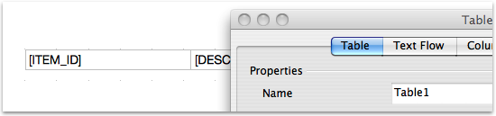
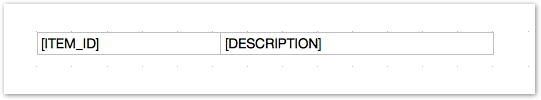

Odf-report
Generates ODF files, given a template (.odt) and data, replacing tags
INSTALL
(sudo) gem install odf-report
USAGE
Step 1 -- the template
First of all, you need to create a .odt file to serve as a template
Templates are normal .odt files with placeholders for Substitutions
There are now four kinds of substitutions available:
- fields
- tables
- images
- sections
Fields placeholders
It's just an upcase sentence, surrounded by brackets. It will be replaced for wathever value you supply.
In the folowing example:
report = ODFReport::Report.new("Users/john/my_template.odt") do |r|
r.add_field :user_name, @user.name
r.add_field :address, "My new address"
end
All occurences of [USER_NAME] found in the file will be replaced by the value of @user.name whereas all [ADDRESS] 'es will contains My new address
It's as simple as that.
Table placeholders
To use table placeholders, you should create a Table in your document and give it a name. In OpenOffice, it's just a matter of right-clicking the table you just created, choose Table... and type a name in the Name field.
If you inform :header=>true, the first row will be treated as a header and left untouched. The remaining rows will be used as the template for the table. If you have more than one template row, they will be cycled. This is usefull for making zebra tables.
As with Field placeholders, just insert a [FIELD_NAME] in each cell and let the magic takes place.
Taking the folowing example:
report = ODFReport::Report.new("Users/john/my_template.odt") do |r|
r.add_field "USER_NAME", @user.nome
r.add_field "ADDRESS", @user.address
r.add_table("TABLE_1", @list_of_itens, :header=>true) do |t|
t.add_column(:item_id, :id)
t.add_column(:description) do { |item| "==> #{item.description}" }
end
end
and considering you have a table like this in your template
and a collection @list_of_itens, it will be created one row for each item in the collection, and the replacement will take place accordingly.
Any format applied to the fields in the template will be preserved.
Images
You must put a mock image in your odt template and give it a name. That name will be used to replace the mock image for the actual image. You can also assign any properties you want to the mock image and they will be kept once the image is replaced.
An image replace would look like this:
report = ODFReport::Report.new("Users/john/my_template.odt") do |r|
r.add_image :graphics1, "/path/to/the/image.jpg"
end
Sections
Sometimes, you have to repeat a whole chunk of a document, in a structure a lot more complex than a table. In this cases, you can use a Section in your template. Creating a Section in OpenOffice is as easy as select menu Insert and then Section..., and then choose a name for it.
Section 's are lot like Tables, in the sense that you can pass a collection and have that section repeated for each member of the collection. But, Sections can have anything inside it, even Tables and nested Sections, as long as you pass the appropriate data structure.
Let's see an example:
@invoices = Invoice.find(:all)
report = ODFReport::Report.new("reports/invoice.odt") do |r|
r.add_field(:title, "INVOICES REPORT")
r.add_field(:date, Date.today)
r.add_section("SC_INVOICE", @invoices) do |s|
s.add_field(:number) { |invoice| invoice.number.to_s.rjust(5, '0') }
s.add_field(:name, :customer_name)
s.add_field(:address, :customer_address)
s.add_table("TB_ITEMS", :items, :header => true) do |t|
t.add_column(:id)
t.add_column(:product) {|item| item.product.name }
t.add_column(:value, :product_value)
end
s.add_field(:total) do |invoice|
if invoice.status == 'CLOSED'
invoice.total
else
invoice.items.sum('product_value')}
end
end
s.add_section("SUB_NOTES", :notes) do |s1|
s1.add_field(:note_title) { |n| n.title }
s1.add_table (...)
end
end
end
Note that when you add a Table to a Section, you don't pass the collection itself, but the attribute of the item of that section that's going to return the collection for that particular Table. Sounds complicated, huh? But once you get it, it's quite straightforward.
In the above example,
s.add_table("TB_ITEMS", :items, :header => true) do |t|:items thing refers to a invoice.items. Easy, right?
Step 2 -- generating the document
It's fairly simple to generate the document. You can use this inside a Rails application or in a standalone script.
Generating a document in a Rails application
In a controller, you can have a code like this:
def print
@ticket = Ticket.find(params[:id])
report = ODFReport::Report.new("#{RAILS_ROOT}/app/reports/ticket.odt") do |r|
r.add_field(:id, @ticket.id.to_s)
r.add_field(:created_by, @ticket.created_by)
r.add_field(:created_at, @ticket.created_at.strftime("%d/%m/%Y - %H:%M"))
r.add_field(:type, @ticket.type.name)
r.add_field(:status, @ticket.status_text)
r.add_field(:date, Time.now.strftime("%d/%m/%Y - %H:%M"))
r.add_field(:solution, (@ticket.solution || ''))
r.add_table("OPERATORS", @ticket.operators) do |t|
t.add_column(:operator_name) { |op| "#{op.name} (#{op.department.short_name})" }
end
r.add_table("FIELDS", @ticket.fields) do |t|
t.add_column(:field_name, :name)
t.add_column(:field_value) { |field| field.text_value || "Empty" }
end
end
report_file_name = report.generate
send_file(report_file_name)
end
The generate method will, well, generate the document in a temp dir and returns the full path of the generated file, so you can send it back to the user.
Generating a document in a standalone script
It's just the same as in a Rails app, but you can inform the path where the file will be generated instead of using a temp dir.
report = ODFReport::Report.new("ticket.odt") do |r|
... populates the report ...
end
report.generate("./documents/")
REQUIREMENTS
rubyzip: for manipulating the contents of the odt file, since it's actually a zip file.
nokogiri: for parsing and manipulating the document xml files.